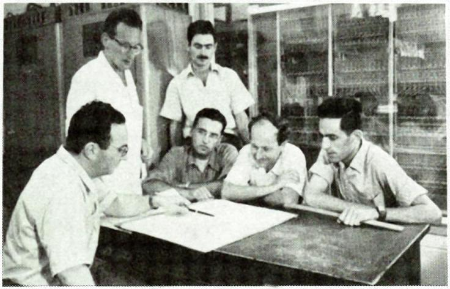
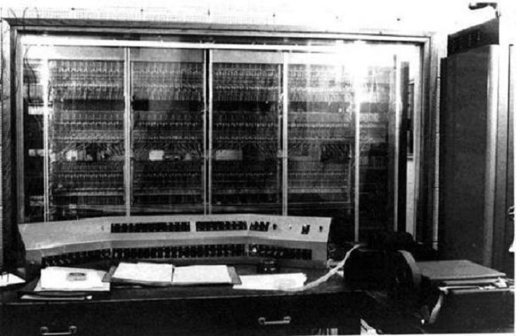
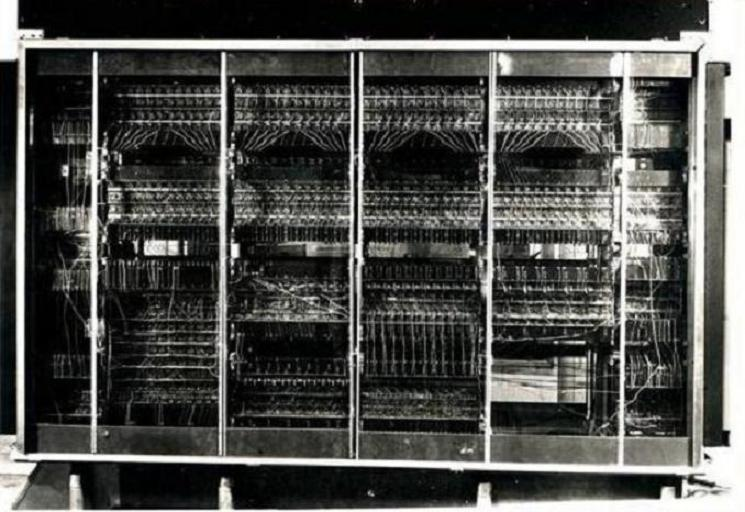
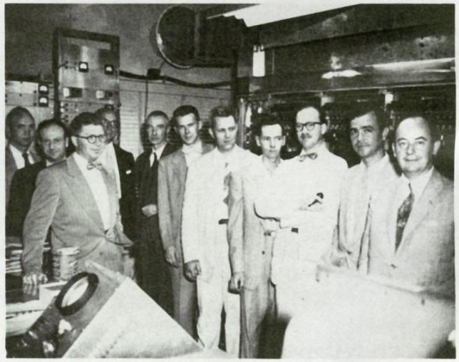
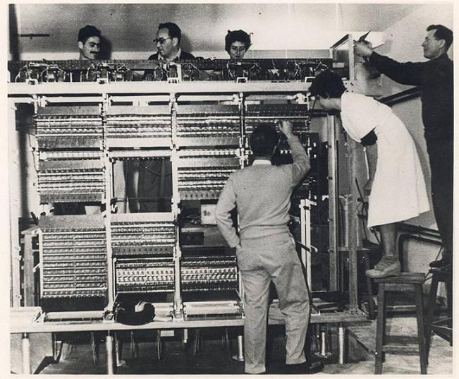
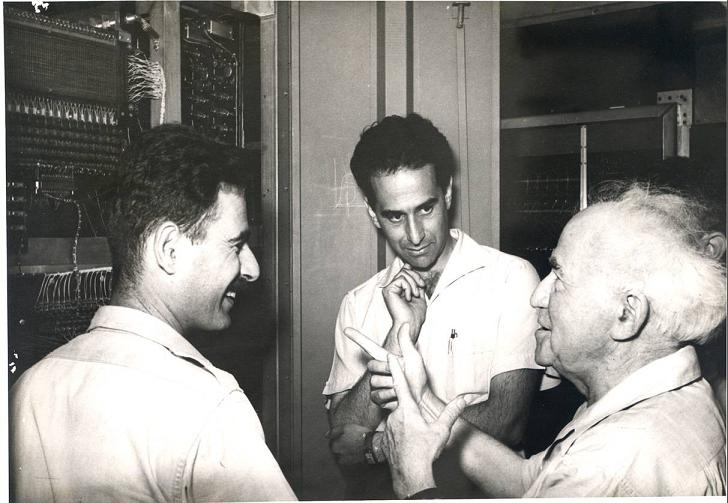

The WEIZAC (Weizmann Automatic Computer) was Israel's first computer,
completed in 1955 at the Weizmann Institute of Science in Rehovot. Based on the
IAS architecture designed by John von Neumann at Princeton, it was built largely
from schematics — without access to many standard parts — by a small team of
dedicated scientists and engineers in the basement of the Ziskind Building.
Key facts: 40-bit word length, 21 instructions,
1024 words of magnetic drum memory (later expanded to 4096, then 12,288 words).
It operated from 1955 until its retirement in 1963, performing groundbreaking
calculations in tidal prediction, quantum mechanics, and numerical analysis.

WEIZAC engineering group with the completed machine (Weizmann archive)

WEIZAC operator console (Weizmann archive)

Central processing unit of WEIZAC (Weizmann archive)
Historical photos in this section are from the Weizmann Institute WEIZAC archive.
The Birth of a Computer in a Nation Being Born
In 1948, the State of Israel had just come into existence through the
War of Independence.
The country lacked housing, roads, and basic infrastructure. Hundreds of thousands of
immigrants were flooding in. Food production was barely functional. And yet, at the
Weizmann Institute of Science
in Rehovot, a small group of visionaries decided this was exactly the right time to build
one of the world's most advanced computing machines.
The result was WEIZAC (Weizmann Automatic Computer), Israel's first
computer and one of the first large-scale stored-program electronic computers in the
world.12
Princeton, 1945: Where It All Started

WEIZAC project leaders and engineers at the Institute for Advanced Study (photo1, Weizmann archive)
The story begins at Princeton University
in the mid-1940s. The Institute for Advanced Study housed some of the greatest minds of
the twentieth century, including Albert Einstein and John von Neumann.
Von Neumann was leading the construction of a revolutionary new machine: the
IAS computer,
one of the first stored-program electronic computers ever built. Working alongside him was
Chaim L. Pekeris, a Lithuanian-born Jewish physicist specializing in
computational methods for solving physical problems. Pekeris was one of the earliest
serious users of computers for scientific calculation.3
In 1945, the Weizmann Institute asked Pekeris to come to Israel and establish a Department
of Applied Mathematics. Pekeris had one condition: the Institute must build a computer
similar to the IAS machine. His driving motivation was to solve
Laplace's tidal equations
for the Earth's oceans — a computational problem far too complex for hand
calculation.1
The Advisory Committee: Einstein Says No, Von Neumann Says Yes
In July 1947, an advisory committee met to discuss Pekeris' plan. Its members included
both Einstein and von Neumann.
Einstein was skeptical. Computers were experimental and expensive, he argued. The idea
seemed impractical for a country still struggling to feed its
people.3
Von Neumann, on the other hand, was enthusiastic. When someone asked, "What will that
tiny country do with an electric computer?", von Neumann replied:
"Don't worry about that problem. If nobody else uses the computer, Pekeris will use it
full time!"
— John von Neumann, 19474
Einstein was eventually persuaded to give his seal of approval.
Chaim Weizmann,
Israel's first president and head of the Weizmann Institute, assigned US$50,000
to the project — 20% of the Institute's entire budget.5
Gerald Estrin: Schematics But No Parts

Constructing and checking WEIZAC (photoa, Weizmann archive)
In 1952, Gerald Estrin,
a research engineer who had worked on the von Neumann IAS project at Princeton, was chosen
to lead the WEIZAC construction. He came to Israel together with his wife
Thelma Estrin,
also an electrical engineer. They arrived on a ship carrying immigrants from North
Africa.3
They brought schematics of the IAS machine, but no physical parts.
"As I look back now, if we had systematically laid out a detailed plan of execution we
would probably have aborted the project."
— Gerald Estrin1
Upon arrival, Estrin's impression was that aside from Pekeris, other Israeli scientists
thought it ridiculous to build a computer in Israel. He was placed in three rooms in
the basement of the Ziskind Building.3
Building It: Improvisation and Determination
With no supply chain and no electronics industry to speak of, the team improvised.
Micha Kedem, an Israeli electrical engineer, joined Pekeris in roaming the
streets of Tel Aviv searching for parts to construct a tube tester. When precision machinery
was needed, they turned to a shop that produced fans and bicycle parts, owned by recent
immigrants from Bulgaria.3
To recruit skilled staff, a newspaper advertisement was posted. Zvi Riesel,
who had been in charge of the IDF radar workshop, saw the ad and applied. Most applicants
had no records of prior education, because those documents were lost in the Holocaust or
during immigration. But in Israel's small technical community, everyone knew everyone
else.36
Phillip Rabinowitz, who had worked on the Whirlwind Computer project at MIT,
began teaching programming courses at Weizmann. His students became Israel's first generation
of computer experts.3
Hans Jarosch, a new immigrant with a Ph.D. in Aeronautical Engineering from
Queen Mary College, London, who had just finished three years in the Israeli Air Force, was
assigned to write application programs.3
First Calculation: October 1955
Central processing unit of WEIZAC (w2, Weizmann archive)
As the computer neared completion, the Estrins returned to the United States. Shortly after,
in October 1955, WEIZAC performed its first calculation.7
By early 1958, WEIZAC was in full operation.3
Chaim Pekeris and colleagues discussing an ocean tides model (photo11, Weizmann archive)
WEIZAC proved its worth immediately:
Ocean tides: Solving Laplace's tidal equations, WEIZAC discovered an
amphidromic point
in the South Atlantic where the tide does not change.1
Quantum mechanics: Yigal Accad programmed Pekeris' mathematical development
of the two-electron atom quantum system into machine code. WEIZAC numerically calculated the
eigenvalues. These results were later experimentally confirmed by Brookhaven National
Laboratory, verifying Schrödinger's equations.8
Other fields: Earthquake analysis, atomic spectroscopy, X-ray
crystallography, random walk methods, and numerical analysis.1
Israel's Only Computer
Until 1961, WEIZAC was the only computer in the entire State of Israel.
It was kept constantly busy. Users from other institutions became frustrated with not being
able to get computing time, and demanded more
computers.16
End of an Era
WEIZAC operated until December 29, 1963. It was replaced by a commercially
built CDC 1604A.
At the same time, the institute's staff began constructing a locally designed successor called
GOLEM, based on the
ILLIAC II
architecture.1
Legacy
"Remarkable changes in Israel were evident. New roads, new buildings, new people, new problems.
Before the start of the WEIZAC project there were no digital electronic computers in Israel.
No electronic digital engineers. No programmers and no support personnel. The WEIZAC people
succeeded in creating the technological know-how necessary for Israel to play a strong role
in the information revolution."
— Gerald Estrin, 19633
WEIZAC's success led to the recognition of the demand for computers and digital technology
in Israel, and ultimately provided the foundation for Israel's computer and technology
industries.6

Micha Kedem, Amos De-Shalit, and David Ben-Gurion (photo12, Weizmann archive)
Timeline
1945
Pekeris at Princeton
Chaim Pekeris works alongside von Neumann on the IAS machine. Seeds of WEIZAC are planted.
1947
Advisory Committee
Einstein and von Neumann debate the plan. $50,000 allocated — 20% of the Institute's budget.
1952
Estrins Arrive
Gerald and Thelma Estrin arrive in Israel with IAS schematics but no parts. Construction begins in the Ziskind basement.
1955
First Calculation
WEIZAC performs its first computation in October. Israel's first computer is alive.
1956
Tidal Equations Solved
WEIZAC discovers an amphidromic point in the South Atlantic — Pekeris' dream realized.
1958
Full Operation
WEIZAC reaches full operational capacity. Memory upgraded to 4,096 words. Magnetic tape I/O added.
1963
Retirement
WEIZAC operates its last day on December 29. Replaced by CDC 1604A. GOLEM successor begins construction.
2006
IEEE Milestone
IEEE recognizes WEIZAC as a Milestone in Electrical Engineering and Computing. The builders receive the WEIZAC Medal.
The People Who Built WEIZAC
CLP
Chaim L. Pekeris
Visionary & Initiator
Lithuanian-born physicist who insisted on building a computer as a condition for joining the Weizmann Institute. His dream: solve Laplace's tidal equations.
JvN
John von Neumann
Architect of the IAS Machine
Designed the stored-program architecture that WEIZAC was based on. Championed the project when Einstein was skeptical.
AE
Albert Einstein
Advisory Committee Member
Initially skeptical of the project's feasibility for a young nation. Eventually gave his approval and blessing.
GE
Gerald Estrin
Construction Lead
Princeton engineer who led WEIZAC's physical construction. Brought IAS schematics to Israel. Later reflected it was "impossible" yet they did it.
TE
Thelma Estrin
Electrical Engineer
Came to Israel with Gerald. One of the earliest women in computer engineering. Later pioneered biomedical engineering at UCLA.
MK
Micha Kedem
Electrical Engineer
Israeli engineer who roamed Tel Aviv streets with Pekeris searching for parts. Built the tube tester from scratch.
ZR
Zvi Riesel
Electronics Technician
Former IDF radar workshop chief who answered a newspaper ad. His records were lost in the Holocaust, but his skills were proven.
PR
Phillip Rabinowitz
Programming Instructor
Whirlwind veteran from MIT who taught Israel's first programming courses at Weizmann. His students became the nation's first computer experts.
HJ
Hans Jarosch
Application Programmer
Ph.D. in Aeronautical Engineering, Queen Mary College. New immigrant who served 3 years in the Israeli Air Force before joining the project.
Corry, Leo; Leviathan, Raya (2023). Chaim L. Pekeris and the Art of Applying Mathematics with WEIZAC, 1955–1963. Springer Nature. ISBN 978-3-031-27125-0
ב-1948, מדינת ישראל זה עתה קמה דרך
מלחמת העצמאות.
המדינה חסרה דיור, כבישים ותשתיות בסיסיות. מאות אלפי עולים הציפו את הארץ.
ייצור המזון בקושי תפקד. ובכל זאת,
במכון ויצמן למדע
ברחובות, קבוצה קטנה של בעלי חזון החליטה שזה בדיוק הזמן הנכון לבנות אחד ממכונות
החישוב המתקדמות בעולם.
התוצאה היתה WEIZAC (Weizmann Automatic Computer), המחשב הראשון בישראל
ואחד המחשבים האלקטרוניים הראשונים בעולם עם תוכנית שמורה בזיכרון.
פרינסטון, 1945: איפה הכל התחיל
הסיפור מתחיל באוניברסיטת פרינסטון באמצע שנות ה-40. המכון למחקר מתקדם (IAS) אירח
כמה מהמוחות הגדולים ביותר של המאה העשרים, ובהם אלברט איינשטיין וג'ון פון נוימן.
פון נוימן הוביל את בניית מחשב ה-IAS. לצידו עבד חיים ל. פקריס,
פיזיקאי יהודי יליד ליטא שהתמחה בשיטות חישוביות. פקריס היה אחד המשתמשים הרציניים
הראשונים במחשבים לחישובים מדעיים.
ב-1945, מכון ויצמן ביקש מפקריס לבוא לישראל ולהקים מחלקה למתמטיקה שימושית.
לפקריס היה תנאי אחד: המכון חייב לבנות מחשב דומה למחשב ה-IAS.
המוטיבציה המרכזית שלו היתה לפתור את משוואות הגאות של לפלס עבור אוקיינוסי כדור הארץ.
הוועדה המייעצת: איינשטיין אומר לא, פון נוימן אומר כן
ביולי 1947, הוועדה המייעצת התכנסה לדון בתוכנית של פקריס. בין חבריה היו
איינשטיין ופון נוימן.
איינשטיין היה סקפטי. מחשבים הם ניסיוניים ויקרים, טען.
"אל תדאגו לבעיה הזו. אם אף אחד אחר לא ישתמש במחשב, פקריס ישתמש בו במשרה מלאה!"
— ג'ון פון נוימן, 1947
איינשטיין שוכנע לבסוף. חיים ויצמן הקצה 50,000 דולר לפרויקט —
20% מתקציב המכון כולו.
ג'רלד אסטרין: שרטוטים בלי חלקים
ב-1952, ג'רלד אסטרין, מהנדס מחקר שעבד בפרויקט ה-IAS בפרינסטון, נבחר להוביל את
בניית ה-WEIZAC. הוא הגיע לישראל יחד עם אשתו תלמה אסטרין, גם היא מהנדסת חשמל.
הם הגיעו על אוניית עולים מצפון אפריקה.
הם הביאו איתם שרטוטים של מחשב ה-IAS, אך ללא חלקים פיזיים.
"כשאני מסתכל אחורה, אם היינו מתכננים באופן שיטתי תוכנית ביצוע מפורטת, כנראה היינו מבטלים את הפרויקט."
— ג'רלד אסטרין
הבנייה: אלתור ונחישות
ללא שרשרת אספקה וללא תעשיית אלקטרוניקה, הצוות אלתר.
מיכה קדם הצטרף לפקריס בשוטטות ברחובות תל אביב בחיפוש אחר חלקים.
צבי ריזל, שהיה אחראי על סדנת המכ"ם של צה"ל, ראה מודעה בעיתון ופנה.
פיליפ רבינוביץ' התחיל ללמד קורסים בתכנות בוויצמן.
הנס ירוש הוקצה לכתיבת תוכניות יישום.
החישוב הראשון: אוקטובר 1955
באוקטובר 1955, ה-WEIZAC ביצע את החישוב הראשון שלו.
עד תחילת 1958, ה-WEIZAC היה בפעולה מלאה.
מפרט טכני
תכונה
מפרט
גודל מילה
40 סיביות
פורמט הוראה
20 סיביות (8 קוד פעולה + 12 כתובת)
הוראות למילה
2
מצב פעולה
א-סינכרוני (ללא שעון מרכזי)
אוגרים
צובר (AC), מכפל/מנה (MQ)
אמצעי קלט ראשי
סרט נייר מנוקב
זיכרון ראשוני
1,024 מילים
זיכרון משודרג
4,096 מילים
זיכרון סופי (1961)
12,288 מילים
פריצות דרך מדעיות
גאות ושפל: פתרון משוואות הגאות של לפלס חשף נקודה אמפידרומית בדרום האוקיינוס האטלנטי.
מכניקת הקוונטים: יגאל עקד תכנת את הפיתוח המתמטי של פקריס למערכת הקוונטית של אטום דו-אלקטרוני. התוצאות אומתו על ידי מעבדת ברוקהייבן.
עד 1961, ה-WEIZAC היה המחשב היחיד בכל מדינת ישראל.
הוא היה תפוס כל הזמן. משתמשים ממוסדות אחרים דרשו מחשבים נוספים.
מורשת
"שינויים מרשימים בישראל היו ניכרים. לפני תחילת פרויקט ה-WEIZAC לא היו בישראל
מחשבים אלקטרוניים דיגיטליים. לא היו מהנדסי אלקטרוניקה דיגיטלית. לא היו מתכנתים
ולא צוות תמיכה. אנשי ה-WEIZAC הצליחו ליצור את הידע הטכנולוגי הדרוש לישראל כדי
למלא תפקיד חזק במהפכת המידע."
— ג'רלד אסטרין, 1963
ב-5 בדצמבר 2006, ה-IEEE הכיר ב-WEIZAC כאבן דרך בהיסטוריה של ההנדסה החשמלית
והמחשוב. הצוות שבנה אותו קיבל את "מדליית ה-WEIZAC".
Loading lesson framework...
WEIZAC Simulator Panel
Operate the machine with power, load, step, run, stop, and reset controls.